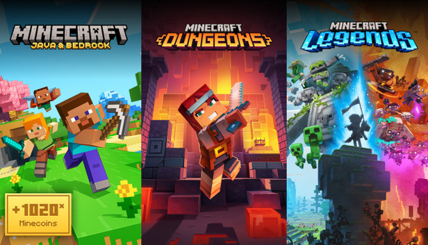

My Childhood Experience with Minecraft

I use to play minecraft when i was younger. My mom wouldnt let me buy the game myself so i would either ask my classmates to play on their phones or play on my own using a modded version. This was until the modded version destroyed my mom's work phone and she carried in to the IT department at her work and they told her the reason was cause of the modded version of minecraft she had no idea was on her phone. I played dumb originally but after the IT depatment told her the reason she was so angry at me cause she had to pay for the phone to be fixed out of her own pay, I felt the consequences when a field trip to the movies was planned and my mom told me i cant go I didnt attempt to download a modded version of minecraft again or minecraft in general for that matter. About 4 years later, which is about 6 years ago during covid when some persons online introduced me to TLauncher, a free version of minecraft. But everything free came at a cost. One day I noticed new applications kept on appearing on my laptop and I was getting command line popups on my screen. I was so confused and I didnt know what was going on. I asked my mom to take a look at my laptop (the IT department at her workplace) and she told me that the reason why this was happening was because of TLauncher. So i came to the conclusion that TLauncher was a virus and I uninstalled it from my laptop and it just made me not want to play minecraft anymore.
Sometimes I wonder if I should have just asked my mom to buy the game for me again during covid. I felt really left out sometimes. I see new updates or versions of minecraft every now and then by watching gameplays, theories and reviews, I like to experience minecraft this way. Safer for my laptop and my pocket. Though I do wish I could play the game myself, I just dont want to risk my laptop and my money. I have a lot of fun watching other people play the game and I have learned a lot about the game through watching reviews, theories and gameplays. Sometimes my friends let me use their laptops to play which is nice but i dont want to to take away their game time and i would like to play live with them. If I were to buy minecraft myself now I wouldnt know where to start cause it feels like im so behind on the game and I would have to learn everything all over again.